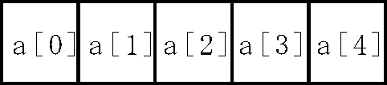

| プログラミングおよび演習 ＮＯ．7 |
| 配列 |
のように、プログラムを書いてよいかも知れません。しかし、これではデータの数が100個あっただけでも、その一つ一つの変数に対して、データの読み込み、演算、結果の画面表示、を変数の数だけ書かなければならなくなりとても手に負えません。
このために、今まで習ったfor文を使って、forループの中で番号を次々と変えて変数名を指定するというようにプログラムを作れば良いと考えることができます。しかし、今までの普通の変数には、こうした使い方がありません。
配列変数は、このような要求に答えるために用意されています。
配列の使い方は、ひとかたまりのデータ全体に名前（配列名）をつけます。そして、そのデータの一つ一つ（配列要素）に要素番号を指定して区別して使います。例えば、配列名がaという名前の配列変数の一つ一つ（配列要素）は、

a[0], a[1], a[2]……
のようになります
aは配列名、0,1,2は配列要素の番号です。
配列変数は、要素指定が必要であることを除けば、今までの普通の変数と同じように使うことができます。
配列の要素番号は０から始まることに注意してください。また、-1や-2などの負の番号はつけないでください（間違いでない使い方もありますが、できないと考えてください）。
配列変数を使う前に、今までの変数と同じように宣言が必要です。
宣言の仕方は
データ型 配列名[要素の数]；
のように行います。例えば100個の要素をもつ(a[0]からa[99]まで)、aという名前の整数型の配列変数を使いたい場合は、
int a[100];
のように宣言します。あとは、a[0]からa[99]までの番号の付いた一つ一つの配列要素を今までの変数と同じように使うことができます。例えば
b=a[0]+3.0*a[1];のように、整数型定数の番号で指定できます。また、
i=0;■表示
float a[100];■演算式と代入
float a[100];例7-1 (1から100までの数の合計を求める)#include <stdio.h>
int main(void)
{
int data[100];
int i,total;
for(i=0; i<100; i++){
data[i]=i+1;
}
total=0;
for(i=0; i<100; i++){
total=total+data[i];
}
printf("total=%d\n",total);
return(0);
}
|
例7-2 (ｎ個のデータを入力して平均値と合計を求める)#include <stdio.h>
int main(void)
{
int n,i;
float data[100],total, average;
/* input number */
printf("number=?");
fflush(0);
scanf("%d",&n);
total=0;
for(i=0; i<n; i++){
/* input value */
printf("NO.%d=",i+1);
fflush(0);
scanf("%f", &data[i]);
total=total+ data[i];
}
/* cal. of average */
average=total/n;
printf("total=%6.2f\n", total);
printf("average=%6.2f\n", average);
return(0);
}
|
| 演習問題7-1 (Revised: 2011/07/07) 例7-2で標本標準偏差sd、標本歪度 skw を求めるようにプログラムを改造してみてください。 ただし、平均値xav、標本標準偏差sd、標本歪度skwの計算式は次式になります。 1 N ｘav= N i=1 1 N sd= { N-1 i=1 N2 1 N skw = (N-1)(N-2) N i=1 標準偏差sdの計算に当たって、式（2）を変形した式(4)を使うこともできます。 1 N N sd= { N-1 i=1 i=1 1 N 1 N = { N-1 i=1 N i=1 式(2)と式(4)の各々でプログラムを作って、手計算の結果と照合すると共に、両式による結果を互いに比較してください。また、どちらの方が効率の良いプログラムであるか、理由を含めて説明してください。 |
■数学関数を使う際の注意
平方根を計算する際に、
sqrt()
の数学関数を使ってください。数学関数を使うときは、プログラムの先頭に、
#include <math.h>
のインクルード文を忘れないで書いてください。
■標準偏差の計算式 (Added : 2017/06/29）
式(4)を用いた標準偏差の計算式のメリット、デメリットについて補足します。
メリット：・ループ（for文）の数が一つで済む。ループ内の演算量も少ないため、処理時間が短くて済みます。
・例7-2のようにループ内でキーボードから次々とデータを読み込む場合、一旦、配列にデータを蓄える必要がないため、メモリが節約できます。
デメリット：式(2)の計算式に比べて、若干、計算精度が悪くなります(式(4)第１項と第２項の引き算で桁落ちが発生する）。
余力のある人は、以上の点について実際にプログラムを動作させて確かめてみてください。
■配列データの初期化
配列変数にデータを代入する方法は幾つかあります。上記の例題のようにキーボードから入力する方法もその一つです。 あるいは、プログラムの中で直接代入して、
と書くこともできます。これ以外によくある方法は、配列変数の初期値として、宣言文の中に設定する方法です。 例えば、10個の要素数をもつ整数型配列a[10]に対して初期値を設定するには、
int a[10]={40,85,90,63,15,53,78,45,93,68};| 演習問題７-2 (Revised: 2015/07/02) ある測定を同じ条件の下でn=20回行ない、次の測定値を得た。 6.1, 5.3, 6.4, 6.8, 5.7, 6.4, 6.6, 5.2, 5.3, 6.3, 5.8, 6.3, 6.4, 6.4, 6.6, 6.3, 6.6, 5.4, 6.0, 5.9 測定データの平均値xav、最大値xmax、最小値xmin、標本標準偏差sdを計算するプログラムを作ってください。さらに、この測定に対する信頼度99%の信頼区間を次式に従って計算してください。 信頼度99%の信頼区間＝ xav - 2.58 sd/√n ～ xav + 2.58 sd/√n なお、上記の説明にあるように、配列に初期値を設定する方法に従って、プログラムを作成してください。 その際、データは必ずしも上記のデータでなく、 自分が用意した適当なデータを使って貰っても構いません。また、考察として、計算結果を手計算の結果と照合し、さらにプログラムの動作を説明して下さい。 コメント： 最大値、最小値はどうしたら算出できるか、プログラムを考えてみてください。 |
| 二次元配列 |
のように使うことができます。試験のデータは英語以外に、数学や物理のデータがあるとすると、 次のような配列データを使うことになります。
int sugaku[5]={60,60,90,100,70};この時、各科目の平均点、最高点、最低点、標準偏差を計算したり、各個人ごとの全科目の合計点を計算する場合を考えてみます。そのために、上記のように科目ごとに３つの一次元配列変数を用意してプログラムを作ってもよいのですが、科目数が多くなると大変になってきます。
エクセルという表計算ソフトを知っている人は多いと思いますが、このようなデータは表にして集計すれば便利なことがわかります。このとき、一次元配列はエクセルの表データの縦１列のデータであり、縦横の両方に並んだ表データは２次元配列のデータになります。すなわち、二次元配列は、
のように、縦の方向にｉ番目、横の方向にｊ番目というように番号をつけたデータです。それは、配列名の後に、括弧 といっしょに２組の番号（例えばiとj）をつけて表現します。２次元配列も、１次元配列と同様に、使う前に変数の型と 配列データの大きさを宣言しておく必要があります。すなわち、宣言文は
データ型 配列名[行の数][列の数]；のように書きます。例えば、縦に５行、横に３列の大きさの整数型の２次元配列は
int a[5][3];のようになり、これによって図のような５行３列の２次元の収納領域が配列名aの名前でコンピュータのメモリに確保されます。
のような代入文を一つ一つ書いても実現できます。 しかし、１次元配列の場合と同じように、 宣言文の初期値として与えたほうがはるかに便利です。初期値を伴った宣言文は、例えば
int a[3][3]={{ 70, 60, 80},のようにします。
■配列同士の演算
N行M列の２次元配列、a[N][M],b[N][M],c[N][M]を考えます。二つの配列aとbの足し算を行い、結果をcに代入するには
のようにします。いきなり、
c=a+b; //これは間違いのように書くことができないことに注意してください。
次の例題は、以上の説明に従って、２次元配列を使って試験の点数を計算するためのプログラムです。
例7-3 表データの計算 (Revised: 2006/07/13) #include <stdio.h>
int main(void)
{
/*変数宣言と配列の初期値設定*/
int i,j,total;
float avg;
int ten[7][3]={{ 70, 60, 80},
{ 50, 60, 50},
{ 70, 90,100},
{ 90,100, 50},
{ 40, 70, 80},
{ 60, 80, 70},
{ 70, 50, 60}};
/*表題*/
printf(" BANGO EIGO SUGAKU BUTURI GOKEI\n");
/*各学生の３科目の合計（行の計算）*/
for(i=0;i<7;i++){
total=0;
printf(" NO.%1d",i+1);
for(j=0;j<3;j++){
printf("%8d",ten[i][j]);
total+=ten[i][j];
}
printf("%8d\n",total);
}
/*各科目の平均点（列の計算）*/
printf(" HEIKIN");
for(j=0;j<3;j++){
total=0;
for(i=0;i<7;i++){
total+=ten[i][j];
}
avg=total/7;
printf("%8.1f",avg);
}
printf("\n");
return(0);
} |
| 演習問題7-3 (Revised: 2015/07/09) 例7-3のプログラムで、試験の点数が int ten[7][3]={{ 30, 65,50}, { 85, 20, 15}, { 25, 50, 20}, { 45, 75, 80}, { 50, 90, 25}, { 60, 70, 85}, { 75, 30, 45}}; であるとします。偏差値に基づいて成績を判定したい。 この目的に適うように、例7-3のプログラムを以下の指示に従って作り変えてみてください。 (1) 科目ごとに点数の平均、標準偏差を計算し、それに基づいて各人の各科目の偏差値を計算してください。 （偏差値は以下のヒントを参照してください） (2) 科目ごとに偏差値の最高、最低、平均、標準偏差を求めて表示してください。 (3) 3科目の合計点に対して同様に平均と標準偏差を計算し、合計点に対する偏差値を計算してください。さらにその偏差値の最高、最低、平均、標準偏差を求めて表示してください。 以下のヒントに示す表示結果になるように、プログラムを作成してください。 計算結果を手計算の結果と照合して正しいことを確認してください。 特に、偏差値の平均や標準偏差は、与えた点数によらず、理論的に常にある一定の値をとります。 その数値を示すとともに、計算結果も理論どおりになることを示して下さい。 また、上記の(2), (3)に対応するプログラムの動作説明を含めた考察を行って下さい。 ヒント： 偏差値は以下の式を使って計算してください。 点数 - 平均点 偏差値＝10× 標準偏差 以下は例7-3の点数データを使用した場合の実行結果の例です。 （問題文の点数データを使用した場合の実行結果を示すこと） (1)各科目の素点と、その平均と標準偏差 番号 英語 数学 物理 NO.1 70 60 80 NO.2 50 60 50 NO.3 70 90 100 NO.4 90 100 50 NO.5 40 70 80 NO.6 60 80 70 NO.7 70 50 60 平均 64.3 72.9 70.0 標準偏差 16.2 18.0 18.3 (2)各人の各科目の偏差値と、その最高、最低、平均、標準偏差 番号 英語 数学 物理 NO.1 53.5 42.9 55.5 NO.2 41.2 42.9 39.0 NO.3 53.5 59.5 66.4 NO.4 65.9 65.1 39.0 NO.5 35.0 48.4 55.5 NO.6 47.4 54.0 50.0 NO.7 53.5 37.3 44.5 最高 65.9 65.1 66.4 最低 35.0 37.3 39.0 平均 *** *** *** 標準偏差 *** *** *** (3)各人の科目合計点と、その平均、標準偏差 番号 科目合計 NO.1 210 NO.2 160 NO.3 260 NO.4 240 NO.5 190 NO.6 210 NO.7 180 平均 207.1 標準偏差 34.5 各人科目合計の偏差値と、その最高、最低、平均、標準偏差 NO.1 50.8 NO.2 36.3 NO.3 65.3 NO.4 59.5 NO.5 45.0 NO.6 50.8 NO.7 42.1 最高 65.3 最低 36.3 平均 *** 標準偏差 *** |